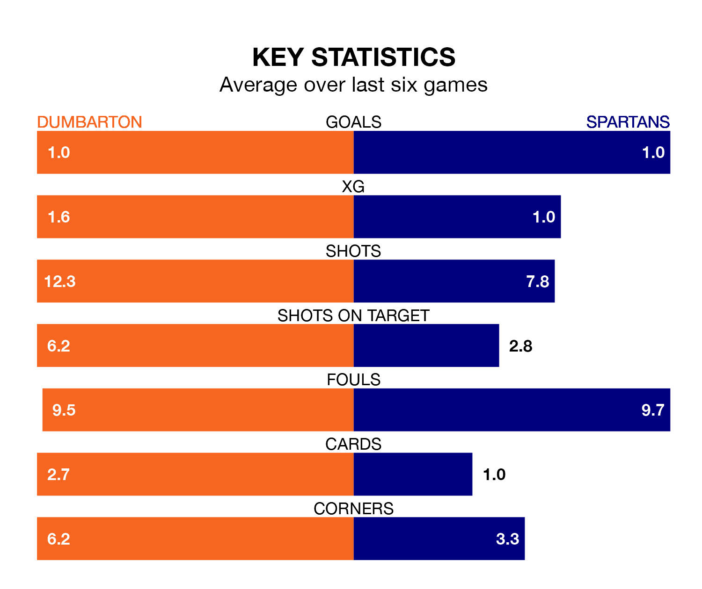

Spartans travel to the moreroom.com Stadium for Tuesday's late match against Dumbarton looking to bounce back from defeat last time out in League Two.
The Spartans, who sit third in the league after 22 games, fell to a 2-1 home defeat to Elgin City on Saturday.
They face a Dumbarton side who secured a draw in their last match, a 2-2 tie with Forfar Athletic, and who sit fourth in the table.
In Blair Henderson, Spartans have the league's most on-form striker so far this season. He has notched 13 goals in 22 appearances.
His goal rate of one every 149 minutes is quicker than that of Tony Wallace, Dumbarton's top scorer with a goal every 164 minutes, and a total of eight goals in 22 games.
With 37 goals in 22 games so far this season, the Sons are the league's third-highest scorers with 1.7 goals per game. And they are conceding fewer than average, letting in 27 goals at a rate of 1.2 per game.
The Spartans are also above average scorers, with 1.6 goals per game, compared to a league average of 1.3. They have conceded 1.1 goals per game.
The home side are in disappointing form in League Two, with one win and two draws from their last six games.
With two wins and a draw over that period, the visitors' form is slightly better – they have taken seven points from 18, compared to Dumbarton's five.
Over the last two years, Dumbarton and Spartans have played each other twice. Spartans won one of them and they drew the other.
Their last meeting was on October 21, when Spartans won 2-0 at home.
Updated: 09:02 (UTC), 13/02/24